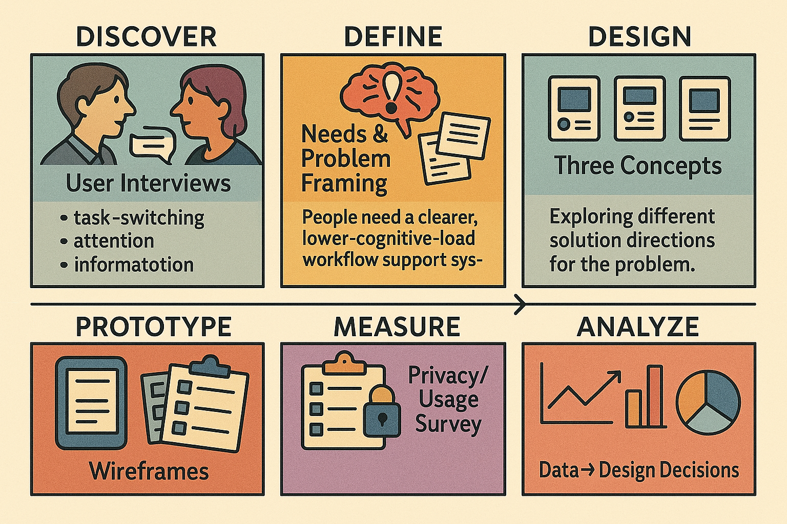

Ashley Cui
Computer Science Master's Student @ Georgetown University
- Currently practicing UI/UX design and product design, working on real-world projects to build design expertise
- Interested in AI product management and exploring how AI technologies can enhance user experiences
- Previous experience as a Software Development Engineer (SDE) with proficiency in HTML, CSS, and JavaScript, bringing technical implementation skills to design work
- I approach projects by planning ahead, identifying knowledge gaps, researching concepts thoroughly, and predicting potential risks to ensure successful outcomes
Work Experience
- Designed and prototyped core product flows for a values-based roommate matching platform using Figma, including onboarding, matchmaking, and trust-focused experiences
- Conducted customer discovery through user interviews and synthesized insights into user personas and key pain points to inform UX decisions and feature prioritization
- Collaborated closely with founders to translate business and growth goals into clear product requirements and user-centered design solutions
- Contributed to the conceptual design of an AI-assisted roommate matching system, focusing on explainability and building user trust
Projects
Toolbox – Focus-Oriented Time Management System (HCI Project)
Starting with the prompt "electronic device time management," we conducted user interviews and co-design sessions to identify workflow pain points, developed user personas, and designed three core features: Toolbox Launcher, Context Recorder, and Focus Scheduler to reduce task-switching cognitive load.
Analyzed survey data using R and BlueSky Statistics to identify attention disruption patterns and inform data-driven design decisions.
View High-Fidelity Design: Canva Design Link
Tools: Figma, Canva, R, BlueSky Statistics | Methods: User Interviews, Co-design Sessions, Persona Development, Wireflows, Prototyping, Quantitative & Qualitative Analysis
Financial Sentiment Analysis — Reflection-driven AI System
Recognizing that many STEM students want to understand finance and investing but lack domain expertise, we built an algorithm to analyze sentiment in financial text. Users can input sentences into our system, which determines the emotional tone and predicts financial market direction.
Applied our reflection-driven algorithm to three AI models (GPT-4o-mini, Qwen-Plus, DeepSeek) and compared their performance, identifying where reflection yields the greatest gains. Currently, we've implemented the core sentiment analysis algorithm. Future plans include building a frontend interface and implementing backend monitoring (using tools like Arize) to track and improve the accuracy of each sentence's prediction.
GitHub: https://github.com/CuiShuhan/fsa
Tech Stack: Python, API Integration, Prompt Engineering, RAG, Hugging Face BERT, Sentence Embeddings | Methods: Reflection-driven Algorithm, Multi-model Evaluation, Product Comparison, Error Analysis
Legal-NER Enhancement Project

Enhanced a RoBERTa-based legal Named Entity Recognition (NER) system by integrating multi-jurisdictional annotated corpora, expanding coverage to 15 legal entity types. Built a GPU-accelerated training pipeline with custom preprocessing for long legal documents.
Achieved 94.5% F1-score and reduced validation loss by 30%, with auto-labeling workflows to support scalable self-training.
GitHub: https://github.com/peterngng/AI_NER-main
Tech Stack: Python, RoBERTa, spaCy, PyTorch, GPU Acceleration, NLP | Methods: Multi-jurisdictional Corpus Integration, Custom Token Alignment, Auto-labeling | Period: Jan 2025 – Apr 2025
Technical Skills & Workflow
Frontend Development: Proficient in HTML, CSS, and JavaScript for building responsive web interfaces and interactive user experiences.
UI/UX Design: Use Figma as my primary design tool for creating wireframes, high-fidelity mockups, and interactive prototypes, translating design concepts into functional interfaces.
Development Environment: Work with GitHub and Git Desktop for version control, and use Cursor as my preferred code editor for efficient development workflows.
Data Analysis & Processing: Leverage Python for data cleaning, preprocessing, and analysis tasks. Also use BlueSky Statistics for statistical analysis and data exploration.
Cloud & Data Infrastructure: Experience with AWS services including S3 for data storage and Redshift for data warehousing, along with SQL for database queries and data manipulation.
Data Visualization: Connect to data sources and create interactive dashboards using Tableau to communicate insights and support data-driven decision making.